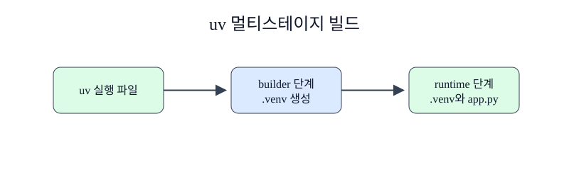

한경 KDT · LLM Agent 개발 & 바이브코딩 · Part 7 · 프로덕션 엔지니어링 · Ch 32 · Docker와 컨테이너
Python 서비스는 실행에 필요한 패키지와 패키지를 설치하는 도구가 다릅니다. 설치기, 컴파일러, 캐시를 모두 최종 이미지에 남기면 배포 파일이 커지고 점검할 대상도 늘어납니다. Docker의 멀티스테이지 빌드는 의존성을 준비하는 환경과 서비스를 실행하는 환경을 한 Dockerfile 안에서 나눕니다. uv 잠금 파일을 함께 사용하면 어떤 버전을 설치했는지도 고정할 수 있습니다.
1절에서 아래 레이어가 바뀌면 위 레이어도 영향을 받는 구조를 확인했습니다. 이제 pyproject.toml과 uv.lock을 앱 코드보다 먼저 복사합니다. Ch30에서 만든 서비스가 있다면 같은 패턴에 프로젝트 파일을 연결할 수 있습니다. 이 절의 app.py는 독립된 최소 서비스이므로 아직 작성 중인 Ch30 파일을 요구하지 않습니다.
공방과 매장을 나누어 생각해 봅니다. 공방에는 절단기와 포장 장비가 필요하지만 손님에게 전달하는 상품 상자에는 완성품만 들어갑니다. 멀티스테이지 빌드(multi-stage build)는 Dockerfile 안에 FROM을 여러 번 사용해 각 작업 환경을 구분합니다. builder 단계는 uv와 Python으로 .venv를 만들고, runtime 단계는 작은 Python 기반 이미지에 .venv와 app.py만 복사합니다. COPY --from=builder가 두 단계 사이의 명시적인 통로입니다. uv는 uv sync --locked로 잠금 파일과 일치하는 환경을 만들며, --no-dev는 개발 전용 의존성을 제외합니다. BuildKit의 cache mount는 다운로드 캐시를 레이어 파일로 굳히지 않으면서 다음 빌드에 재사용하게 합니다. 최종 단계는 비관리자 course 사용자로 실행해 애플리케이션 프로세스의 권한 범위를 줄입니다.
멀티스테이지 Dockerfile은 여러 FROM으로 빌드 단계와 실행 단계를 나눕니다. AS builder는 앞 단계를 이름 붙이고, COPY --from=builder는 그 단계에서 필요한 가상환경이나 산출물만 최종 단계로 복사합니다. uv와 컴파일 도구는 빌드에 필요하지만 서비스 실행에는 필요하지 않을 수 있으므로 최종 이미지에서 제외합니다.
단계를 나누는 목적은 줄 수를 늘리는 것이 아니라 최종 런타임의 책임을 줄이는 데 있습니다. 디버깅 도구까지 제거하면 운영 이미지는 작아지지만 장애 조사 방식도 달라집니다. 빌드 단계와 실행 단계의 Python 버전·플랫폼이 다르면 복사한 바이너리 패키지가 동작하지 않을 수 있으므로 같은 호환 조건을 사용합니다.

기본 실행은 Dockerfile로 ch32-optimized:local을 빌드합니다. 컨테이너 안의 Python 3.12는 정상 실행되지만 command -v uv는 실패해야 합니다. 실패 확인에서는 존재하지 않는 buidler stage를 지정해 Docker가 대상 이름을 찾지 못하는 실제 오류를 관찰합니다. 수정 셀은 정확한 builder를 대상으로 빌드하고 /app/.venv/bin/uvicorn이 있는지 검사합니다.
준비된 Python 3.12 노트북에서 첫 셀부터 Shift+Enter로 하나씩 실행합니다. 안내한 결과를 먼저 확인하고 지정한 값 하나를 바꿔 비교합니다. 문서를 사용하는 실습은 파일 묶음이 필요합니다. 노트북과 실습 파일 함께 받기 · 처음 실습하는 방법. 전체 코드 복사에는 아래의 Before/After 셀도 포함됩니다. 이 HTML에서는 코드를 실행하지 않습니다.
Docker Desktop의 실습 전용 이미지와 스택만 사용해 결과를 확인합니다.
Docker 명령과 실습 경로를 준비합니다.
이 준비 셀은 현재 폴더와 부모 폴더에서 Dockerfile.baseline이 있는 Ch32 실습 폴더를 찾습니다. run(*args, check=True)은 모든 Docker 명령을 그 폴더에서 실행하고 표준 출력·오류와 종료 코드를 CompletedProcess로 반환합니다. 실패 자체를 관찰하는 셀만 check=False를 전달하며, 마지막에는 Docker Engine이 응답하는지 확인합니다.
# Docker 명령을 일정한 폴더에서 실행하고 실패도 결과로 받습니다.
from pathlib import Path
import json, subprocess, time, urllib.request
# 챕터 폴더와 notebooks 폴더 어디에서 시작해도 제공 자료를 찾습니다.
candidates = [parent / "labs/part7/ch32-docker" for parent in (Path.cwd(), *Path.cwd().parents)]
candidates += [Path.cwd(), Path.cwd().parent]
LAB = next(path for path in candidates if (path / "Dockerfile.baseline").is_file())
def run(*args: str, check: bool = True) -> subprocess.CompletedProcess[str]:
return subprocess.run(args, cwd=LAB, text=True, capture_output=True, check=check)
version = run("docker", "version", "--format", "{{.Server.Version}}")
print("Docker Engine", version.stdout.strip())
assert version.stdout.strip()Docker Engine 29.4.1
최적화 Dockerfile을 빌드하고 uv가 최종 이미지에 없는지 확인합니다.
멀티스테이지 Dockerfile은 여러 FROM으로 빌드 단계와 실행 단계를 나눕니다. AS builder는 앞 단계를 이름 붙이고, COPY --from=builder는 그 단계에서 필요한 가상환경이나 산출물만 최종 단계로 복사합니다. uv와 컴파일 도구는 빌드에 필요하지만 서비스 실행에는 필요하지 않을 수 있으므로 최종 이미지에서 제외합니다.
# builder에는 uv가 있지만 runtime에는 실행 환경만 복사합니다.
run("docker", "build", "-f", "Dockerfile", "-t", "ch32-optimized:local", ".")
python_version = run("docker", "run", "--rm", "ch32-optimized:local", "python", "--version")
uv_probe = run("docker", "run", "--rm", "ch32-optimized:local", "sh", "-c", "command -v uv", check=False)
print(python_version.stdout.strip(), "uv exit", uv_probe.returncode)
assert python_version.stdout.startswith("Python 3.12") and uv_probe.returncode != 0Python 3.12.14 uv exit 127
확인할 점 — 명령의 종료 코드와 실제 출력이 본문의 설명과 같은지 확인합니다. 실습 전용 이름을 사용했으므로 다른 Docker 자원을 변경하지 않습니다.
오타가 든 stage 이름은 0이 아닌 종료 코드를 반환했습니다. 같은 Dockerfile에서 builder로 고치자 가상환경 실행 파일 검사가 성공했습니다. 이는 stage 이름이 단순한 설명이 아니라 --target과 COPY --from이 참조하는 식별자임을 보여 줍니다. 최종 runtime 이미지에서 uv 명령이 없다는 사실은 이 예제의 분리 결과를 증명합니다. 빌드 도구가 없다고 해서 이미지가 자동으로 안전해지는 것은 아닙니다. 기반 이미지와 설치 패키지의 취약점, 실행 사용자, 업데이트 정책은 별도로 관리해야 합니다.
앞의 실행 예제를 실행한 같은 노트북에서 Before 다음 After 순서로 실행합니다. 출력은 실제 실행 결과입니다.
존재하지 않는 stage를 지정하면 빌드가 시작되기 전에 실패합니다.
# stage 이름 오타를 실제 빌드 오류로 확인합니다.
bad = run("docker", "build", "--target", "buidler", "-f", "Dockerfile", ".", check=False)
message = bad.stderr + bad.stdout
print("exit", bad.returncode, "unknown target", "buidler" in message)
assert bad.returncode != 0 and "buidler" in messageexit 1 unknown target True
정확한 builder stage를 지정하면 의존성 환경까지 빌드됩니다.
단계를 나누는 목적은 줄 수를 늘리는 것이 아니라 최종 런타임의 책임을 줄이는 데 있습니다. 디버깅 도구까지 제거하면 운영 이미지는 작아지지만 장애 조사 방식도 달라집니다. 빌드 단계와 실행 단계의 Python 버전·플랫폼이 다르면 복사한 바이너리 패키지가 동작하지 않을 수 있으므로 같은 호환 조건을 사용합니다.
# 정확한 stage 이름으로 중간 산출물을 검사합니다.
run("docker", "build", "--target", "builder", "-t", "ch32-builder:local", ".")
probe = run("docker", "run", "--rm", "ch32-builder:local", "sh", "-c", "test -x /app/.venv/bin/uvicorn")
print("builder venv ready", probe.returncode == 0)
assert probe.returncode == 0builder venv ready True
.venv를 .dockerignore에 넣고 컨테이너 안에서 새로 만들 것을 권합니다. 호스트 가상환경은 운영체제와 CPU에 의존할 수 있습니다.다음 학습과 이어지는 지점 — 3절에서는 같은 앱을 한 단계 기준 이미지와 멀티스테이지 이미지로 빌드해 크기와 캐시 기록을 측정합니다.
COPY --from=builder의 역할은 무엇인가요?
정답과 해설 — builder 단계에서 만든 선택된 파일을 현재 stage로 복사합니다.
uv.lock을 pyproject.toml과 함께 먼저 복사하는 이유는 무엇인가요?
정답과 해설 — 앱 코드만 바뀌었을 때 의존성 설치 레이어의 캐시를 유지하기 위해서입니다.
최종 이미지에서 uv가 없음을 왜 검사하나요?
정답과 해설 — 빌드 전용 도구가 runtime에 포함되지 않았다는 설계 결과를 확인하기 위해서입니다.
비관리자 사용자로 실행하는 이유는 무엇인가요?
정답과 해설 — 프로세스가 침해되었을 때 컨테이너 안에서 행사할 수 있는 권한을 줄이기 위해서입니다.